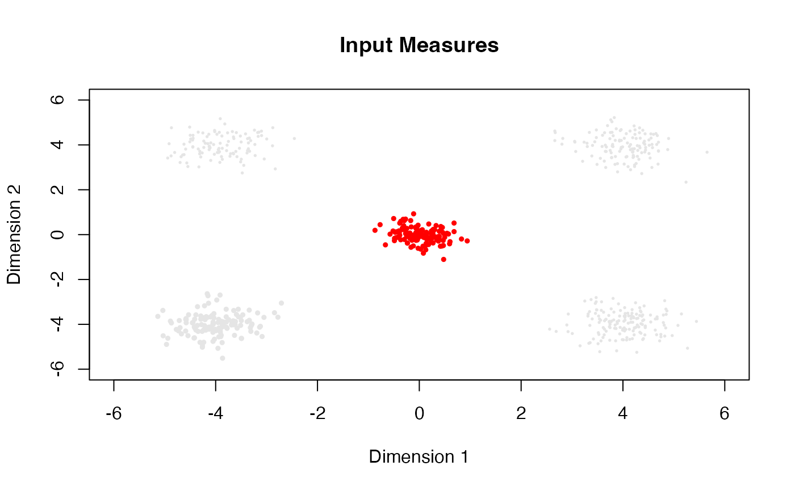

Free-Support Barycenter by von Lindheim (2023)
rbary23L.RdFor a collection of empirical measures \(\lbrace \mu_k\rbrace_{k=1}^K\), this function implements the free-support barycenter algorithm introduced by von Lindheim (2023) . The algorithm takes the first input and its marginal as a reference and performs one-step update of the support. This version implements `reference` algorithm with \(p=2\).
Arguments
- atoms
a length-\(K\) list where each element is an \((N_k \times P)\) matrix of atoms.
- marginals
marginal distributions for empirical measures; if
NULL(default), uniform weights are set for all measures. Otherwise, it should be a length-\(K\) list where each element is a length-\(N_i\) vector of nonnegative weights that sum to 1.- weights
weights for each individual measure; if
NULL(default), each measure is considered equally. Otherwise, it should be a length-\(K\) vector.
Value
a list with two elements:
- support
an \((N_1 \times P)\) matrix of barycenter support points (same number of atoms as the first empirical measure).
- weight
a length-\(N_1\) vector representing barycenter weights (copied from the first marginal).
References
von Lindheim J (2023). “Simple Approximative Algorithms for Free-Support Wasserstein Barycenters.” Computational Optimization and Applications, 85(1), 213–246. ISSN 0926-6003, 1573-2894, doi:10.1007/s10589-023-00458-3 .
Examples
# \donttest{
#-------------------------------------------------------------------
# Free-Support Wasserstein Barycenter of Four Gaussians
#
# * class 1 : samples from Gaussian with mean=(-4, -4)
# * class 2 : samples from Gaussian with mean=(+4, +4)
# * class 3 : samples from Gaussian with mean=(+4, -4)
# * class 4 : samples from Gaussian with mean=(-4, +4)
#
# The barycenter is computed using the first measure as a reference.
# All measures have uniform weights.
# The barycenter function also considers uniform weights.
#-------------------------------------------------------------------
## GENERATE DATA
# Empirical Measures
set.seed(100)
unif4 = round(runif(4, 100, 200))
dat1 = matrix(rnorm(unif4[1]*2, mean=-4, sd=0.5),ncol=2)
dat2 = matrix(rnorm(unif4[2]*2, mean=+4, sd=0.5),ncol=2)
dat3 = cbind(rnorm(unif4[3], mean=+4, sd=0.5), rnorm(unif4[3], mean=-4, sd=0.5))
dat4 = cbind(rnorm(unif4[4], mean=-4, sd=0.5), rnorm(unif4[4], mean=+4, sd=0.5))
myatoms = list()
myatoms[[1]] = dat1
myatoms[[2]] = dat2
myatoms[[3]] = dat3
myatoms[[4]] = dat4
## COMPUTE
fsbary = rbary23L(myatoms)
## VISUALIZE
# aligned with CRAN convention
opar <- par(no.readonly=TRUE)
# plot the input measures
plot(myatoms[[1]], col="gray90", pch=19, cex=0.5, xlim=c(-6,6), ylim=c(-6,6),
main="Input Measures", xlab="Dimension 1", ylab="Dimension 2")
points(myatoms[[2]], col="gray90", pch=19, cex=0.25)
points(myatoms[[3]], col="gray90", pch=19, cex=0.25)
points(myatoms[[4]], col="gray90", pch=19, cex=0.25)
# plot the barycenter
points(fsbary$support, col="red", cex=0.5, pch=19)

par(opar)
# }